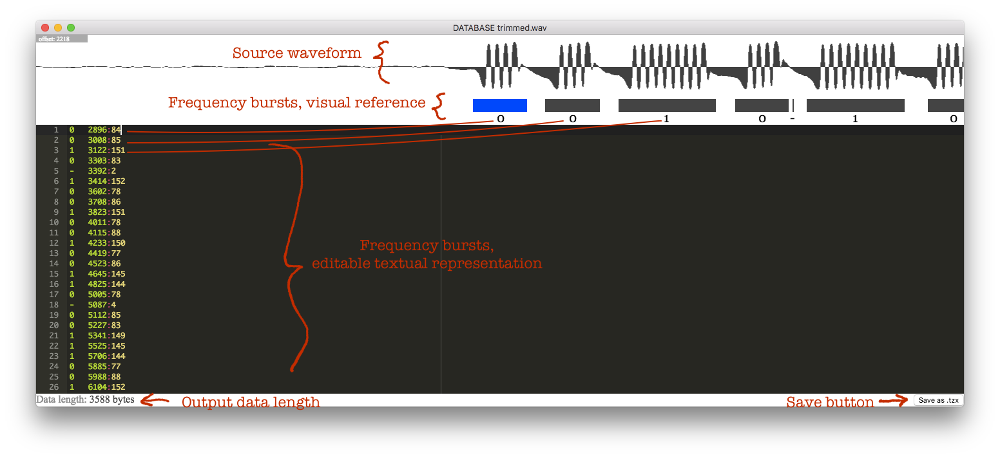
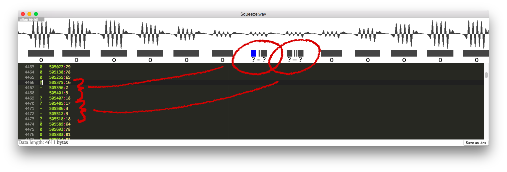
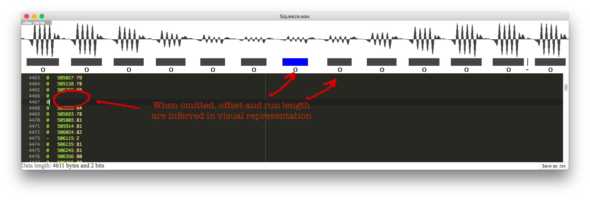
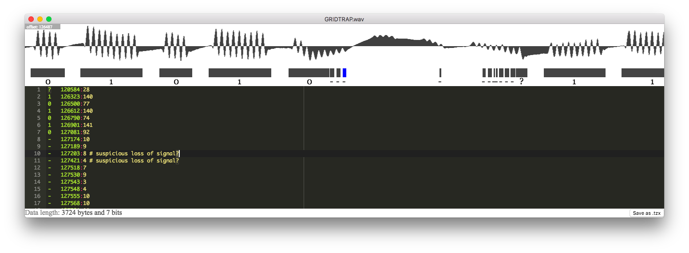
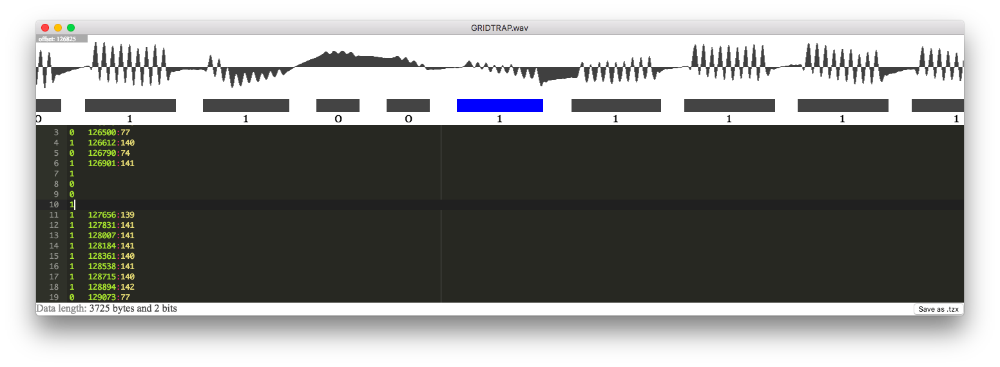
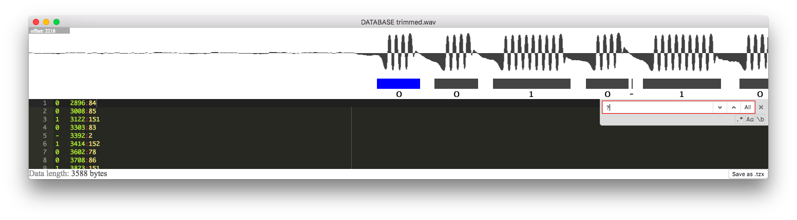

ZX81 Tape Reader decodes audio recordings of ZX81, Lambda 8300, and Timex Sinclair 2068 cassette tapes. It analyzes WAV files for frequency-encoded bit patterns and lets you manually review and correct the results before exporting to .tzx or .p format for use in emulators.
? marks to find areas that need manual correction.
The window has three areas:
Each line in the editor represents one detected frequency burst:
SYMBOL OFFSET:LENGTH
For example: 0 197441:67
| Symbol | Meaning |
|---|---|
0 | Zero bit — short pulse matching expected zero length |
1 | One bit — longer pulse matching expected one length |
? | Unknown — pulse length doesn't match either; needs manual review |
- | Noise — very short burst, automatically ignored |
The offset is the sample index where the burst starts, and length is the burst duration in samples. Both are optional when editing — if omitted, they are inferred from the previous line. This is useful when inserting corrected bits.
Comments can be added after #. The tool automatically adds
# suspicious loss of signal? where it detects unusually
long pauses in the recording.
When the signal degrades briefly, the analysis may interpret valid pulses
as noise (marked with -):

Visual inspection shows these should be zeros. Delete the noise lines
and insert lines containing just 0:

Longer signal degradation can make multiple bits unreadable:

The # suspicious loss of signal? comments help locate
these areas. By examining the waveform ripples, a human can often
determine the correct bit sequence:

Sometimes the tape is in good condition and searching for ?
yields nothing — you can export immediately:

? marks and quickly
find areas needing attention.0 or 1). The offset and length
will be inferred automatically.| Shortcut | Action |
|---|---|
| Cmd+O | Open WAV file |
| Cmd+Shift+O | Open session file |
| Cmd+S | Save session |
| Cmd+Shift+S | Save session as... |
| Cmd+F | Find in editor |
| Cmd+Z | Undo |
| Cmd+Shift+Z | Redo |
| F1 | Open this guide |
| Extension | Description |
|---|---|
.wav | Input audio recording of tape |
.ztr | Session file (JSON) — saves your work in progress |
.tzx | ZX Spectrum/ZX81 tape image with headers — for emulators |
.p | Raw ZX81 program file — direct memory image for emulators |
For each sample in the WAV file, the tool uses a Goertzel algorithm to detect 3.2 kHz frequency bursts (the encoding frequency used by the ZX81). Sequences of detected frequencies are collected into runs, and each run's length is compared against the expected lengths for zero and one bits. This frequency-based approach works better than amplitude detection on deteriorated tapes where signal levels vary.